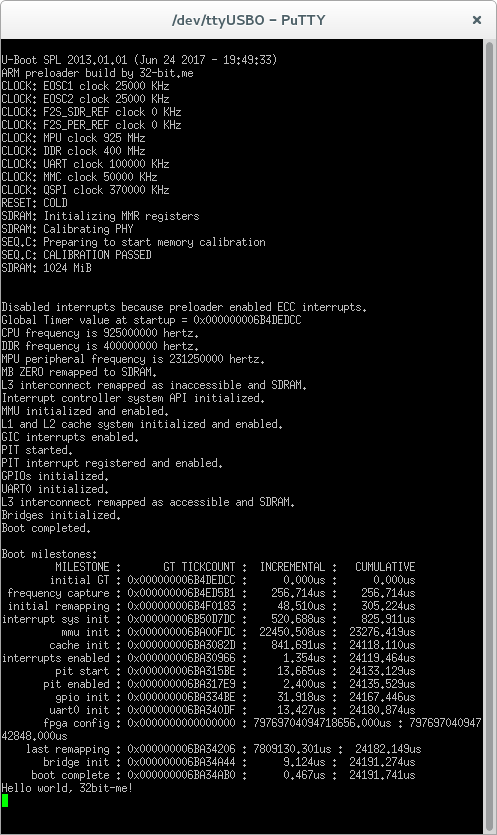

Building a Bare-Metal Application on Intel Cyclone V for Absolute Beginners
Setting up Linux on the development board like SocKit with a double-core ARM Cortex A9 is not rocket science. A manufacturer of the board supports the ready-to-use image, appropriate for installing on SD card or another media. But what if you are craving to touch bare metal, approaching a neck-breaking speed of code not restrained by an OS core? Well, it is possible, but not so easy and obvious. In this short essay, I’ll give you step-by-step instruction, how to build and run you first bare-metal application on Cyclone V SoC, that uses ARM Cortex A9 core of the HPS subsystem of the SoC.
You need to have the development board with Intel (Altera) Cyclone V SoC. I used SoCKit board:

I’ve been doing all the things described in this article in Debian Jessie. You can use other Linux system or Windows with corresponding changes.
And you need DS-5 IDE. And, unfortunately, free edition doesn’t allow you to compile a bare-metal code. You need the full version.
1. Preparation
1.1. Despite you have the full version of DS-5, you need to install the free DS-5 Altera Edition. Both versions must be installed in the sudo mode, in different directories, for example: /home/user/intelFPGA for DS-5 Altera Edition, and /home/user/DS-5 for the full version of DS-5. You should enter paths by hand during the installation process.
2. Running IDE
2.1. Firstly, run the script /home/user/intelFPGA/16.1/embedded/embedded_command_shell.sh, then change a directory to /home/user/DS-5/bin and run IDE:
1 | $ ./eclipse & |
The script set environment variables. To set the variables when a system starts you should add the following line to the file /home/user/.profile:
1 | QUARTUS_ROOTDIR=/home/user/intelFPGA/16.1/qprogrammer export PATH=$PATH:/usr/local/gcc-arm-none-eabi-5_4-2016q3/bin/:/home/user/intelFPGA/16.1/embedded/host_tools/mentor/gnu/arm/baremetal/bin/ |
If it is necessary, add a similar line for otter required variables, such as QSYS_ROOTDIR.
Also, you need to install and run Quartus Prime. Let’s consider, that the installation directory of Quartus is /home/user/intelFPGA/16.1/quartus/.
Run Quartus Prime, that is located at /home/user/intelFPGA/16.1/quartus/bin/quartus, and it’s JTAG programmer utility, located at /home/user/intelFPGA/16.1/qprogrammer/bin/quartus_pgmw.
3. Connecting the SoCkit
3.1. Connect the SoCkit board to a computer. Connect microUSB cables to the ports of the board, named “USB Blaster (JTAG)” and “USB to UART”.
3.2. Switch the board on and enter:
1 | $ ls /dev/bus/usb/001 |
The last number (003) is an JTAG interface. Set permissions to writing:
1 | $ sudo chmod 666 /dev/bus/usb/001/003 |
You have to do it every time you turn on the board.
3.3. Setting the TTY terminal
You can use this command:
1 | screen /dev/ttyUSB0 115200 |
4. Building the preloader (u-boot-spl)
4.1. Download the file sockit_ghrd_16.0.tar.gz and unpack it. For example, unpack it to /home/user/ghrd-16/sockit_ghrd.
4.2. Run Quartus Prime and open file /home/user/ghrd-16/sockit_ghrd/soc_system.qpf.
4.3. Run Qsys (Tools/Qsys). Open file /home/user/ghrd-16/sockit_ghrd/soc_system.qsys. Do Generate/Generate HDL and quit Qsys.
4.4. Run Assembler in Quartus Prime.
4.5. Run bsp-editor: /home/user/intelFPGA/16.1/embedded/host_tools/altera/preloadergen/bsp-editor. Create a new project: File/New HPS BSP. In the field “Preloader setting directory“ write “/home/user/ghrd-16/sockit_ghrd/hps_isw_handoff/soc_system_hps_0“.
4.6. Set up the Preloader. Go to the tab Advanced. Switch Watchdog_enable off. If you want to see debug messages through JTAG, you can switch on Semihosting. After this press Generate and quit.
4.7. It’s possible to change the startup message. For example, in the file software/spl_bsp/uboot-socfpga/board/altera/socfpga/socfpga_cyclone5.c change the string “BOARD: Altera SOCFPGA Cyclone V Board“ on another:
1 | /* |
4.8. The environment variable SOCEDS_DEST_ROOT must be set to /home/user/intelFPGA/16.1/embedded:
1 | export SOCEDS_DEST_ROOT=/home/user/intelFPGA/16.1/embedded |
Now go to the directory /home/user/ghrd-16/sockit_ghrd/software/spl_bsp and do make. Make can fail with an error “make: mkpimage: Command not found“, but it should build the u-boot-spl file in the path /home/user/ghrd-16/sockit_ghrd/software/spl_bsp/uboot-socfpga/spl/u-boot-spl.
4.9. Testing the preloader
4.9.1. You don’t need an FPGA image (which has a “.sof” extension) for running the preloader. Run DS-5, and open “Run/Debug configurations“.
4.9.2. In the field Connection should be set the CV SoCKit 1-1 option. If it’s not so, press “Browse“ button and set this option. If an error appears, do 3.1-3.2.
4.9.3. Set the file u-boot-spl on the Files tab, in the “Application on host to download“ field: /home/user/ghrd-16/sockit_ghrd/software/spl_bsp/uboot-socfpga/spl/u-boot-spl. Set the flag “Load symbols“. Remain the “Files“ field empty.
4.9.4. Switch off a debugging script launching on the Debugging tab.
4.9.5. Run terminal utility (for example, screen) and press the “Debug“ button. The preloader is loaded into memory and a debugger is ready to launch. Press the “Continue“ button (or F8) and see the message:
1 | U-Boot SPL 2013.01.01 (Jun 24 2017 - 19:49:33) |
It means that the preloader started successfully.
4.9.6. After debugging session press buttons “Disconnect From Target“ and “Remove Connection“.
5. Write “Hello World” for the bare-metal mode
5.1. Download the project ArrowSocKit_BareMetal_GNU.zip. Set environment variables as in 2.1., run DS-5, import the project from the archive (File/Import/Existing Project into Workspace, Select archile file). The unpacked project appears in the directory /home/user/DS-5-Workspace/BareMetalBoot-GNU.
5.2. You can try to build the project with make, but it can’t be build yet. To build the project, do the following.
5.3. Copy the directory /home/user/intelFPGA/16.1/embedded/ip/altera/hps/altera_hps/hwlib into /home/user/DS-5-Workspace/. Here are folders src and include, and in each of them there are soc_cv_av and soc_a10 directories. You may remove directories named soc_a10. Then copy files libcs3.a, libcs3arm.a, libcs3unhosted.a from /home/user/intelFPGA/16.1/embedded/host_tools/mentor/gnu/arm/baremetal/arm-altera-eabi/lib to the project directory (/home/user/DS-5-Workspace/BareMetalBoot-GNU). Copy the file arm-names.inc from /home/user/intelFPGA/16.1/embedded/host_tools/mentor/gnu/arm/baremetal/arm-altera-eabi/lib/cortex-a9/ to /home/user/DS-5-Workspace/BareMetalBoot-GNU/.
5.4. In the Makefile change “CROSS_COMPILE := arm-none-eabi-“ to “CROSS_COMPILE := arm-altera-eabi-“. Also change the path to hlib: HWLIBS_ROOT := /home/user/DS-5-Workspace/hwlib
5.5. Now run make. and read all error messages. If make can’t find some symbol, you should find it in directories hwlib/src/soc_cv_av and hwlib/include/soc_cv_av, and make a copy in hwlib/src and hwlib/include correspondingly. After you find all fules, make fails with the error “mkimage: not found“, but it’s not important, because we need only the test.axf file.
5.6. Running an application
5.6.1. To run an application it is necessary to load an FPGA image (.sof file), that was generated when we’ve built the preloader. Run the programmer as we did in 2.1. There must be the text “CV SoCKit [1-1]“ to the right of the bottom “Hardware Setup“. If there isn’t, you should set the write permission for the JTAG port (see above) and click the Hardware Setup button.
5.6.2. Click Auto Detect and select an arbitrary option from a list. You see a configuration of two devices: one is what you’ve selected (for example, 5CSEBA6) and the second is SOCVHPS. Remove the first device: select it and press Delete. Press “Add File“ and open the image file (/home/user/ghrd-16/sockit_ghrd/output_files/soc_system.sof). A new device appeared to the right of SOCVHPS. Move it with a mouse to the first place in the chain. After this, press Start and upload the image.
5.6.3. In DS-5 open “Debug Configuration“ on the “Files“ tab. Set the file u-boot-spl on the line “Application on host to download“. Remove a mark at “Load Symbols“. Set the file “test.axf“ at the line “Files“. On the Debugger tab check the “Run target initialization debugger script“ and set the script file “debug-unhosted.ds“, located in th project directory. In the file edit the path to the preloader:
1 | # Load the SPL preloader into memory. |
Run the TTY terminal screen and press Debug. Then the preloader will start, an application will be uploaded, and a debugger will be set on a start point of the program. Press “Continue“ button. In a window of a terminal you will see preloader’s output, as was shown above, then the following:

Congratulations! You’ve just run your first bare-metal application on the Cortex-A9 core.
Link to the repository: https://github.com/arktur04/cyclone-v-baremetal